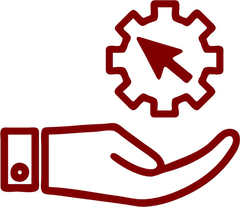

Rede e operação técnica
Organize a operação técnica, consulte informações dos equipamentos integrados e agilize diagnósticos do suporte.
- Status de equipamentos integrados
- Apoio ao diagnóstico técnico
- RADIUS incluso no sistema
Ecossistema de Gestão Centralizada para provedores de internet
Rede, pessoas, frota e processos conectados em um ecossistema de gestão centralizada. Mais controle para crescer sem perder o domínio da operação.

O problema
O provedor cresce, mas a gestão continua fragmentada: cada área em um sistema, planilha ou conversa diferente. O resultado é desperdício que ninguém enxerga no caixa.
Rede em um sistema, RH na planilha, frota no papel. Nenhuma informação conversa com a outra.
Dados digitados mais de uma vez, conferências manuais e erros que custam horas da equipe.
Equipamentos, veículos e atividades sem histórico claro de quem fez o quê, e quando.
A operação só anda com o proprietário ou poucas pessoas por perto, e isso trava o crescimento.
A solução
A Centralize não é apenas um software de rede. É um ecossistema de gestão centralizada que conecta a operação técnica, as pessoas, o patrimônio e os processos do provedor em uma única plataforma, com um único acesso.

CentralizeFuncionalidades
Todos os planos incluem o sistema completo, com todos os módulos.
Organize a operação técnica, consulte informações dos equipamentos integrados e agilize diagnósticos do suporte.
Estruture a rotina da equipe com menos cálculo manual e mais previsibilidade no fechamento.
Amplie a rastreabilidade de veículos e ativos e organize as rotinas de uso e manutenção.
Acompanhe atividades e organize os fluxos da operação de ponta a ponta.
Caso real · Topnet
A Centralize nasceu e roda dentro da Topnet, provedor onde a plataforma foi criada e testada no dia a dia. Estes são os resultados relatados nessa operação.
RH · Fechamento da folha
4 h 1 h
75% menos tempo para fechar a folha.
Rede · Diagnóstico técnico
3 min 10 s
94,44% menos tempo de espera no diagnóstico do suporte.
Frota · Rastreabilidade
100%
dos motoristas com uso de veículo registrado.
Capacidade operacional
+30%
de base atendida com a mesma equipe.
Resultados relatados pela operação da Topnet. Os resultados de cada provedor variam conforme o porte, os processos e o uso da plataforma.
Diferenciais
Construída especificamente para a realidade operacional de provedores de internet.
Rede, RH, frota e processos conectados na mesma plataforma, com um único acesso.
Capital humano, patrimônio, operação técnica e processos vistos em conjunto para decisões mais rápidas.
Apoio técnico de quem entende de rede para implantar o sistema e garantir o aproveitamento de todos os recursos.
Criada por quem operou provedores por anos, do campo à gestão, e validada em ambiente real.
Como funciona
Entendemos a operação do seu provedor e mostramos a plataforma aplicada à sua realidade.
Escolhemos juntos o plano conforme o porte e o nível de apoio técnico que você precisa.
Setup do sistema e treinamento de 2 horas para a equipe começar a usar.
Suporte de uso sempre que precisar, com integração e consultoria conforme o plano.
Planos
Mensalidade definida pela quantidade de clientes ativos do provedor e pelo plano escolhido. Contrato de 12 meses.
Para o provedor que deseja apenas a gestão.
R$500/mês
até 1.500 clientes ativos
+ R$ 150 a cada bloco de 500 clientes acima disso
Sem se preocupar com integração
Para o provedor que quer os ativos de rede configurados e integrados.
R$600/mês
até 1.500 clientes ativos
+ R$ 150 a cada bloco de 500 clientes acima disso
Para o provedor que quer um braço técnico de redes contínuo.
R$980/mês
até 1.500 clientes ativos
+ R$ 200 a cada bloco de 500 clientes acima disso
Ainda em dúvida sobre o plano? Na demonstração avaliamos o porte e a necessidade técnica do seu provedor.
Dúvidas frequentes
Não. A Centralize é um ecossistema de gestão centralizada: conecta a operação técnica a áreas como pessoas e RH, frota e patrimônio e processos operacionais, tudo em uma única plataforma.
Para provedores de internet de diferentes portes e modelos de operação (B2C, B2B ou B2G). A melhor configuração depende da sua operação, da quantidade de clientes ativos e da necessidade de integração.
Não necessariamente. O plano Essencial contempla o sistema completo; o Integrado acrescenta a integração dos ativos de rede; e o Parceiro acrescenta consultoria mensal de redes.
Todos os planos incluem setup do sistema e treinamento inicial de 2 horas. Nos planos Integrado e Parceiro, a implantação também cobre a integração dos ativos que o provedor já utiliza, conforme o porte da rede.
Não. Nenhum plano inclui monitoramento ativo e contínuo (NOC). O plano Parceiro oferece consultoria de redes em horário comercial para demandas comuns da rede.
Ainda não. A API aberta para parceiros faz parte da visão futura da plataforma e não está disponível no momento.
Solicite uma demonstração. Avaliamos juntos o porte do provedor, a integração necessária e o nível de apoio técnico para indicar o plano mais adequado.
Solicitar demonstração
Conte um pouco sobre o seu provedor. Nossa equipe comercial entra em contato para agendar uma demonstração aplicada à sua realidade.
Prefere e-mail? comercial@centralize.net.br
Obrigado. Nossa equipe comercial vai entrar em contato pelo WhatsApp ou e-mail informado para agendar sua demonstração.